| 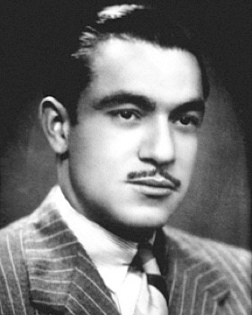 |
EMILIANO SUÁREZ FAFFIÁN
D. Emiliano Suárez Faffián introdujo un gran avance en el gremio de joyeros fundando en Bilbao la primera tienda-taller de joyería, origen de lo que es hoy Grupo Suárez. |
|
1943
Fundación de Joyería Suárez (Bilbao, Calle Jardines 11) Era una pequeña tienda de unos 20 metros cuadrados que puso en marcha el proyecto de la familia Suárez. |
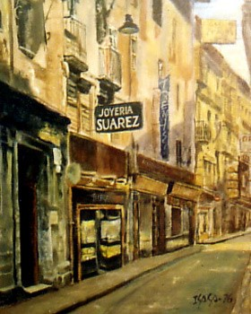 |
| 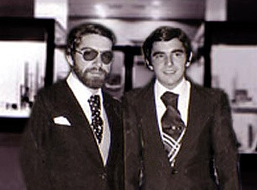 |
1974
Fallecen en accidente el señor Suárez y su esposa Sara. Los jóvenes hermanos Benito y Emiliano adquieren toda la responsabilidad del negocio familiar. |
|
1975
Inauguración de la segunda tienda (Bilbao, Calle Ercilla 25) Los hermanos Suárez comienzan su expansión en Bilbao inaugurando la nueva tienda en la calle Ercilla 25. |
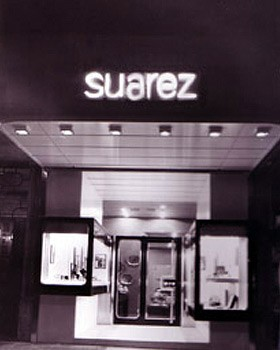 |
| 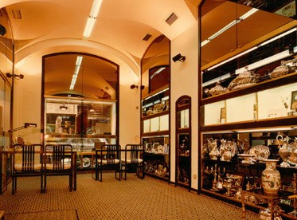 |
1978
Inauguración tienda (Bilbao, Calle Correo, 21) Los hermanos Suárez deciden cerrar la primera tienda que fundó su padre para poner en marcha un nuevo proyecto. |
|
1982
Apertura de la primera tienda en Madrid. (Madrid, Calle Serrano, 63). Los hermanos Suárez extienden su proyecto a Madrid inaugurando una tienda en la calle Serrano 63 |
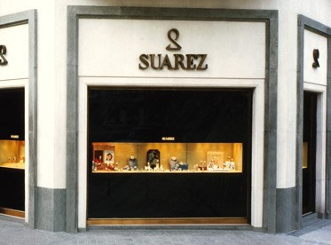 |
| 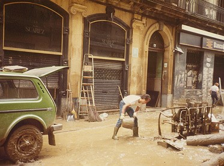 |
1983
Inundaciones en Bilbao. Las inundaciones en Bilbao causaron graves e irreparables daños en las tiendas, que se pudieron superar gracias a la capacidad de trabajo y superación de todo el equipo Suárez. |
|
1985
Apertura tienda Bilbao (Bilbao, Calle Gran Vía 43) Se decide cerrar las tiendas de Ercilla y Correo para trasladarse a una gran tienda localizada en los bajos del emblemático edificio Sota, en la Gran Vía 43 de Bilbao. |
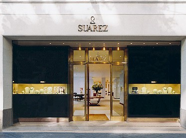 |
| 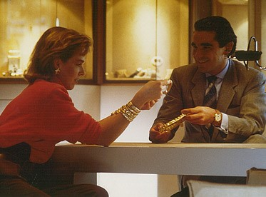 |
1992
Sofía de Habsburgo Archiduquesa de Austria y amiga de la familia Suárez, Sofía de Habsburgo fue una de las primera embajadoras de Suárez. |
|
1997
Ampliación de la tienda Serrano 63 (Madrid, Calle Serrano 63) Se reforma la tienda de Serrano 63 y la firma Patek Philippe la escoge para montar su primer ‘Shop in Shop’ en el mundo. |
| 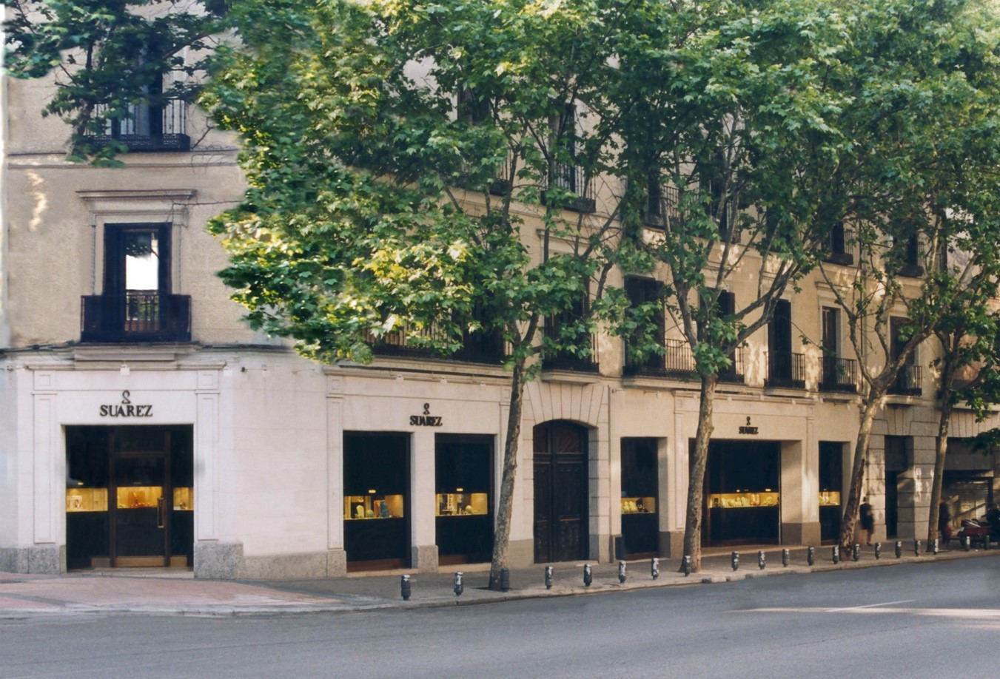 |
1999
Ampliación de la tienda Serrano 62 (Madrid, Calle Serrano 62) El grupo Suárez amplía de una forma espectacular sus instalaciones de la calle Serrano 62, convirtiéndose en una de las joyerías más grandes de Europa. |
|
2000
Sautoirs de Perlas Suárez introduce en el mercado los sautoirs de perlas, collares maxis de perlas australianas, Tahití y Golden que dan un giro a la forma de lucir las perlas hasta el momento. |
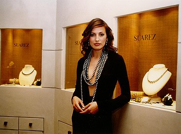 |
| 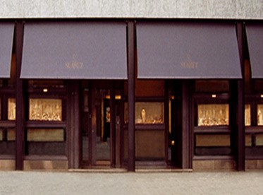 |
2003
Apertura en Barcelona (Barcelona, Paseo de Gracia 82) Su fachada de más de 34 metros de largo y sus más de 800 metros cuadrados exponen las mejores marcas de relojería y las colecciones de joyas creadas por la firma. |
|
2004
Príncipes de Asturias Suárez tuyo el honor de ser la joyería elegida por SS.AA.RR los Príncipes de Asturias para comprar sus joyas de compromiso. |
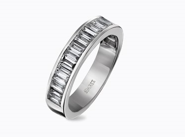 |
| 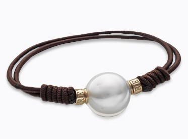 |
2008
Colección ONE Suárez crea la Colección ONE, su proyecto solidario. Una colaboración muy especial con la Fundación Aladina, que tiene como objetivo apoyar a los niños y adolescentes con cáncer destinando un porcentaje de las ventas de esta pulsera con un diseño único. |
|
2010
El Corte Inglés (Madrid, Calle Serrano 47 y Castellana, Raimundo Fernández Villaverde 79). Apertura de puntos de venta en el Corte Inglés de Serrano y Castellana. |
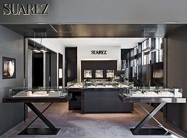 |
| 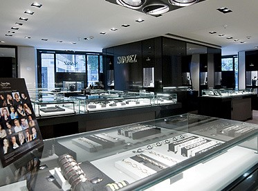 |
2011
El Corte Inglés (Barcelona, Valencia, Zaragoza, Murcia, Bilbao, Madrid Pozuelo y Sevilla) Apertura de varios puntos de venta en El Corte Inglés en diferentes ciudades. |
|
2012
Campaña Mario Testino Laetitia Casta Mario Testino se convierte en el fotógrafo de la nueva campaña de Suárez protagonizada por la actriz y modelo Laetitia Casta. |
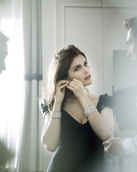 |
| 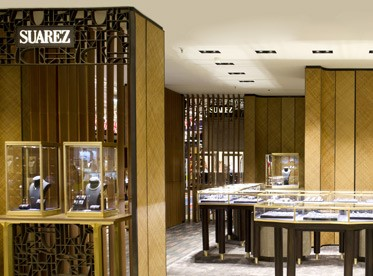 |
2015
Nuevo concepto tienda Tras la presentación del proyecto en un concurso entre varios arquitectos internacionales del más alto nivel, Suárez selecciona el proyecto de un prestigioso estudio parisino y comienza su ejecución bajo la dirección del estudio G4 basado en Barcelona y liderado por el arquitecto Ernest Boronat. Un nuevo concepto de tienda basado en espacios abiertos donde la luz y materiales como la rafia, el cuero y latón son los protagonistas. |
| Ir a Arriba | Regresar a Home |